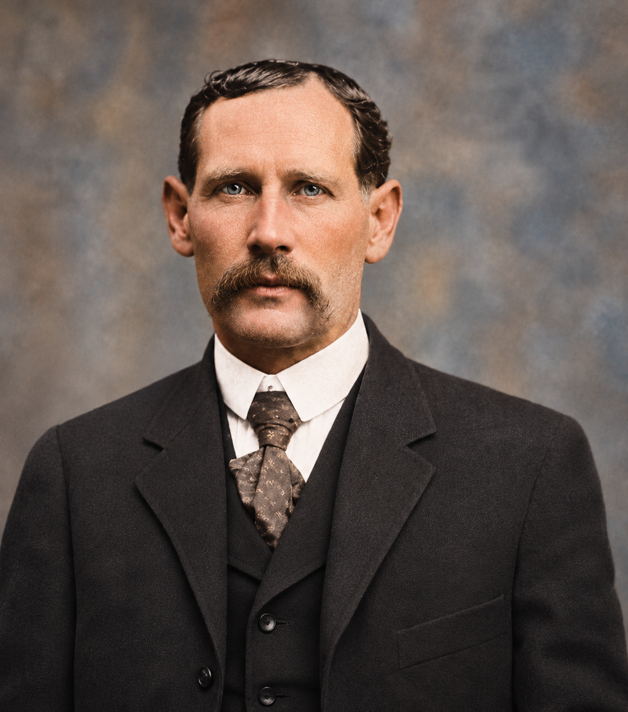

Lambson family · Person
Arba Lorenzo Lambson Jr.
1860–1910

- Names in the records
- Arba Lorenzo Lambson
- Born
- July 20, 1860 · Lyons Township, Mills County, Iowa
- Died
- May 1, 1910 · Springville, Utah
- Burial
- Evergreen Cemetery, Springville, Utah
Born in Iowa and listed in the 1861 wagon company as an infant. He married Rosella Blanchard in Springville in 1881.
Family connections
Parents Arba Lorenzo Lambson Sr., Sarah Cordellia Harrington
Grandparents Boaz Lambson, Jonathan Cyrus Harrington, Julia Ann Clark, Polly Walworth
Spouses and partners Rosella Francenia Blanchard
Children with Rosella Francenia Blanchard: Minnie Jane Lambson, Ernest Labar Lambson, Rosella Francina “Zella” Lambson, Clara Cordelia Lambson Miller, Archibald Arba Lambson, Theadore Lambson, Glenn Cody Lambson, Lambson infant
Siblings Drusilla Lambson (Half-sibling) · Unnamed twin daughter (Half-sibling) · Anna Hopkins Lambson (Half-sibling) · Apollas Boaz Lambson (Half-sibling) · Mary Paulina Lambson (Half-sibling) · John Allen Lambson (Half-sibling) · Almon Marion Lambson (Half-sibling) · Jonathan Thomas Lambson (Full sibling) · Elizabeth Lillian Lambson (Full sibling) · Albert Edwin Lambson (Full sibling) · Daniel Byron Lambson (Full sibling)
Relationship evidence
- Child · Minnie Jane Lambson · Documented in FamilySearch
Sources · FamilySearch profile · Rosella Francenia Blanchard
- Child · Ernest Labar Lambson · Documented in FamilySearch
Sources · FamilySearch profile · Rosella Francenia Blanchard
- Child · Rosella Francina “Zella” Lambson · Documented in FamilySearch
Sources · FamilySearch profile · Rosella Francenia Blanchard
- Child · Clara Cordelia Lambson Miller · Documented in FamilySearch
Sources · FamilySearch profile · Rosella Francenia Blanchard
- Child · Archibald Arba Lambson · Documented in FamilySearch
Sources · FamilySearch profile · Rosella Francenia Blanchard
- Child · Theadore Lambson · Documented in FamilySearch
Sources · FamilySearch profile · Rosella Francenia Blanchard
- Child · Glenn Cody Lambson · Documented in FamilySearch
Sources · FamilySearch profile · Rosella Francenia Blanchard
- Child · Lambson infant · Documented in FamilySearch
Sources · FamilySearch profile · Rosella Francenia Blanchard
- Parent · Arba Lorenzo Lambson Sr. · Documented in FamilySearch
- Parent · Sarah Cordellia Harrington · Documented in FamilySearch
- Marriage · Rosella Francenia Blanchard · Documented in FamilySearch
- Event date
- 1881-01-13
- Place
- Springville, Utah
Sources · FamilySearch profile · Arba Lorenzo Lambson · FamilySearch profile · Rosella Francenia Blanchard
Research questions Review the additional marriage attached to Arba Jr.
Data review Individual audit and evidence status
Sources · Existing Lambson family archive · FamilySearch profile · Arba Lorenzo Lambson · FamilySearch profile · Sarah Cordellia Harrington